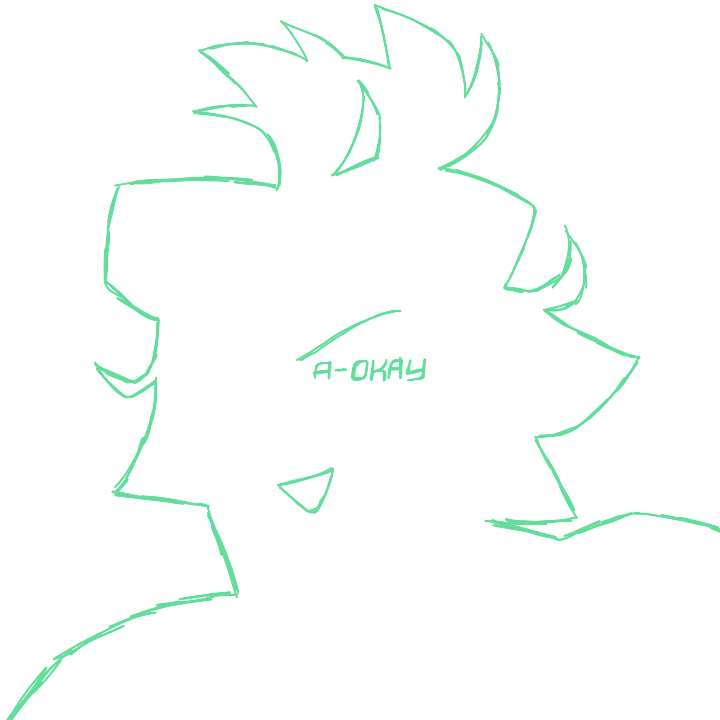
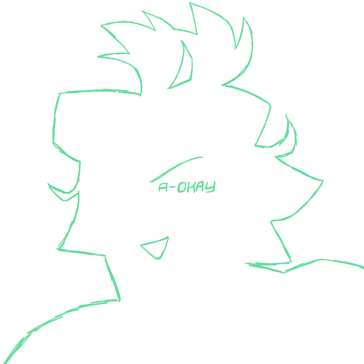

Subject
- Full name: Marceline "Mars" Zepp
- Age: 26
- Status: Missing
Marceline Zepp has been a loyal representant of the A-OKAY brand name from its independant origins to its recent acquisition by Statera Co. However, her behaviors in the past few years have been contradictory to what A-OKAY stands for. She has been chosen by Statera higher ups to be the first subject in the research experiment known as A-OKAY project, a never-seen-before AI experiment with the goal of replacing certain of a popular figure's private and public interactions with those of a clone, or replica. The research was started in January of 2047 and the project was officially deployed three years later on January 1st, 2050.